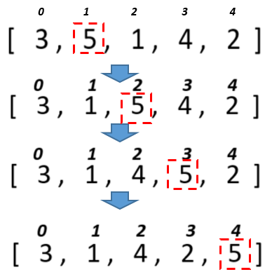
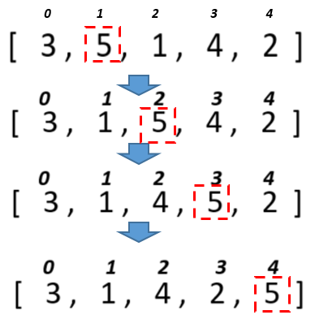

Завдання №4
Для розглянутих методів сортування спробувати вивести етапи сортування шляхом виведення відповідних таблиць за зразком.
Тобто кожного разу після обміну елементів вивести поточний стан масиву на екран (стрілки не потрібні).
Для розглянутих методів сортування спробувати вивести етапи сортування шляхом виведення відповідних таблиць за зразком.
Тобто кожного разу після обміну елементів вивести поточний стан масиву на екран (стрілки не потрібні).